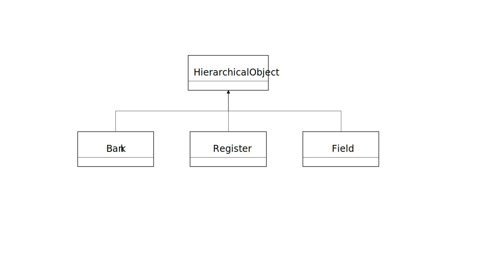

This document describes the Simics C++ Device API, which is a C++ layer built on top of the Simics C API. See the Model Builder User's Guide for more information about the C API. The C++ Device API is also used when integrating SystemC models into the Simics framework. See the SystemC Library Programming Guide for more information about Simics and SystemC models.
We recommend that you use DML for writing new simulation models, but it is often necessary to port existing simulations models from a different environment to Simics. If these are written in C++ or SystemC, you can use the C++ Device API to simplify the task. For SystemC there is further support described in the SystemC Library Programming Guide.
The Simics C++ Device API is a collection of C++ functions, data types, and templates that make it easier to connect a C++ simulation model to the Simics framework. The C++ Device API is implemented as a layer on top of the Simics C API, and the detailed API documentation is found in the Simics C++ Device API Reference Manual. The source code is found in [simics]/src/devices/c++-api.
While this application note aims to cover most aspects of porting C++ device models to the Simics APIs, it is assumed that you are familiar with the Simics device modeling concepts described in the Model Builder User's Guide.
Version 2 of the Simics C++ Device API replaces the old Simics C++ Device API, which has been retroactively named as the Simics C++ Device API v1. The v1 API was developed before the C++11 standard was introduced. The v1 API also has some technical limitations; for example, no support for Simics port objects that was introduced in Simics version 6.
The v2 API utilizes C++11 and C++14 features to improve productivity. It has been designed to be easier to use and adds support for Simics port objects. To use the v2 API, your C++ compiler must support C++14, which means that the minimal GCC compiler version is 6.3 and the minimal MSVC compiler version is 2015. Later versions are typically used.
Figure 1 shows the high-level observation of the Simics C++ device API version 2. The v2 API consists of several parts. First it provides support for registration of a Simics class which connects with your C++ device. It also provides Port and Connect concept to communicate with other Simics modules. Then for inspection and checkpointing, it also includes support for Attribute. The Event concept helps to register events which are driven by the Simics scheduler. Last but not the least, a tech-preview feature to support programming registers is included.
To use the v2 API, you must set USE_CC_API = 2 in your module's Makefile and #include <simics/cc-api.h> in your C++ source files. The Simics C++ Device API is exported in the simics namespace.
The module sample-device-c++ provides source code that shows how to use the API described in this document. Use bin/project-setup --copy-module sample-device-c++ to copy the code to your Simics project for easy reference.
Before you start to connect your C++ device to the Simics API, you need to consider which the logical components of your device model are, and how they are connected to each other and the rest of the simulation environment.
In Simics, device models are implemented as separate objects that are dynamically connected to each other using the Simics configuration system, and the objects communicate using explicitly requested interfaces. This is in contrast to C++, where the objects are often aggregated at compile time or by running compiled startup code and interfaces are resolved during compilation and linking. The Model Builder User's Guide has a more complete description of the Simics object system.
Similar to C++, objects in the Simics simulator are instances of classes. However, Simics classes are not C++ classes but instead defined by Simics modules. Simics modules declare Simics classes by calling the Simics API when the module is loaded. Simics classes have attributes, interfaces, port objects, and callbacks to allocate and delete instances of the class. The C++ API provides a convenient way to express these Simics simulator concepts in C++, but there is not a 1-to-1 correspondence between C++ classes and Simics classes.
The first step is to decide how the C++ model should appear within Simics. For a simple C++ model that models a small piece of hardware, it is probably sufficient to make the entire model into a single Simics class.
But for a C++ model that consists of several components connected together, it is worth considering exposing it as several Simics classes. One reason for this is that it makes the Simics configuration more natural by creating a model that fits better with the Simics framework. And it allows for future separation of the model parts without major changes to the configurations.
Simply exposing the model as several classes will not automatically make the classes independent under the surface; they are still implemented as one conglomerate of C++ objects inside the implementation. To fully take advantage of the flexibility of the Simics configuration system, the device should be split it to discrete pieces that communicate only using Simics interfaces. By using well-known interfaces, the devices will become replaceable by newer implementations individually, and will allow experimentation in reconfiguration without having to recompile the model sources, or even having access to the source code.
This document focuses on creating Simics modules wrapping simple C++ models which define a single Simics class, but it easily extends to modules with several classes.
A Simics object attribute is used to accomplish primarily three things. The first is to specify configuration parameters when initially creating the model instance. This includes connections to other configuration objects, model parameters such as frequencies and buffer sizes, but anything is possible.
The other main purpose of attributes is to allow saving and restoring the model state to support checkpointing. This means that the complete state of the model needs to be available to the Simics configuration system as attribute values. Attributes would be read to save the state of the model, and the attributes would then be written to set the state of a new instance of the model to the same state as saved in the checkpoint.
A third use of attributes is to inspect and control the state of the model. This is usually covered by the same attributes used for checkpointing, as it is about the state of the models. Attributes are read in order to inspect the state, and attributes can also be changed (from scripts or CLI) to force changes to the state of the model during a simulation session.
Attributes should never be used to communicate simulation information between objects after instantiation. They are a model-to-simulator mechanism, not a model-to-model mechanism. Models should communicate over interfaces.
State attributes used for checkpointing and/or inspection could also be used to set the initial state of the model at setup time.
The configurable aspects of the C++ model should be available as configuration attributes. In some cases this will mean small changes to the C++ implementation.
The most common configurable parameter is probably references to other Simics configuration objects, such as interrupt targets, memory spaces, or DMA controllers. All references to other Simics simulation objects have to be provided as configuration parameters. Such references are set using object references when a Simics simulation session is set up. The model must never make any assumptions about which other objects are present in the system configuration or there names.
If the C++ model is written with compile-time configuration using the preprocessor, consider rewriting it to be dynamically reconfigurable. This will make the model more versatile, and potentially much more useful to a broader audience. The overhead of runtime checking of these kinds of configuration parameters is negligible in the vast majority of devices, especially when run in the context of full-system simulation.
For example, a parameter to decide which hardware revision to be compatible with may very well be a run-time parameter. Another option is adding configuration parameters that go outside the scope of the known hardware, by allowing buffer sizes and similar parameters to be reconfigured for experimental purposes.
To support checkpointing, the model needs to be able to collect a full description of the current model state and it needs to be able to restore the model to the checkpointed state when the Simics object is created.
To support reversible execution, the requirements are stricter. The object needs to be able to restore from a checkpointed state at any time, even when there is a previous state that must be discarded.
An existing C++ model needs to be examined to find how its simulation state is defined. If the model is not written to handle checkpointing, it may need to be updated with a way to extract and restore the state.
The model state is made available to the Simics configuration system using a number of attributes. There should be one attribute for each piece of the model state. It is a good idea to design the set of attributes for the model in a way that allows some separation of the external, checkpointable representation of the state from the implementation details. Ideally, the checkpoint format should not need to be updated when the implementation is changed, including running on a different host platform, using different C++ classes, internal representation or other structural changes. As a minimum requirement the external representation must not depend on what compiler is used, or whether the model is built for a 32-bit or 64-bit environment. Preferably it should be fully portable between platforms regardless of what CPU architecture the simulation is running on. When changes to the checkpoint format is required, Simics provides ways to still be able to read old checkpoints with updated models.
For example, if the model models a device with 16 32-bit registers with different meaning, it is preferably represented as 16 integer-valued attributes, with names that match those used in the device programming manual.
Never save a copy of the binary in-memory representation of a C++ object or struct. This is highly unportable and may break checkpoint compatibility just by recompiling the source with different compiler flags. Pointer variables obviously break in this case.
A Simics device model interacts with the rest of the simulation using interfaces. The interfaces can either by implemented on the device model or on a separate port object. There may be several port objects implementing the same interface.
To be useful, the model should implement one or more interfaces. The most commonly implemented interfaces are those used to simulate memory transactions between processors, devices, and memory. The current recommended interface for memory operations in Simics is the transaction interface. The old and still widely used interface for memory operations is called io_memory.
There is a 1-to-1 correspondence between the Simics C interface and the Simics C++ interface. Simics C++ models should use the Simics C++ interfaces instead of the Simics C interfaces. For example, use transaction interface by #include <simics/c++/model-iface/transaction.h> in your C++ source files. See 6.4 for how to create and use an user defined Simics C++ interface.
A memory-mapped I/O Simics device model interacts with the memory bus using register banks. Each register bank is a separate port object. One device model can have many register banks.
The register bank processes the received transaction and passes it down to the related registers on the bank. Each register is generally used to model a hardware register. Typically some model behavior is triggered when the register is being accessed. A register can be further divided into fields on the bit level.
By using register banks, the rich Simics features are automatically enabled. The register banks can be easily inspected, traced and manipulated using Simics tools. The registers are registered as Simics attributes and automatically saved in a Simics checkpoint. See 7 for how to create and use the register banks.
For more information about how to design a model for Simics, see Model Builder User's Guide.
The first step of building a C++ simulation model for Simics is to create a Simics module. Typically, you put each Simics class in a module of its own. It is also common to have multiple closely-related classes in a single module (to simplify distribution if the classes would typically be used together anyway).
To create a Simics C++ module skeleton, you use project-setup:
Windows
> cd my-simics-project
project> bin\project-setup --c++-device my_cc_device
Linux
$ cd my-simics-project
project$ ./bin/project-setup --c++-device my_cc_device
See the Build Environment chapter in the Model Builder User's Guide for details on how to set up a project and creating Simics module skeletons.
When a Simics module is loaded into Simics, it is initialized by running its init_local function, which must use C linkage; i.e., it must be wrapped by extern "C". This function is responsible for registering the Simics classes in the module with the Simics core, but you can add any other initialization code needed to that function.
The standard Simics memory tracking allocator is used by Simics C++ device API by default, by providing it as a custom allocator for new and delete. This is done per module. For a module to use its own custom allocators or even the default new allocator, this feature can be disabled.
To disable the feature, set the USE_CC_MEMORY_MANAGEMENT build parameter to no and rebuild the module.
A Simics class has a name, a short description and a documentation string. Its functionality is implemented in a number of configuration attributes and the interfaces.
For each instance of a Simics class defined using the C++ API, there will be a C++ object created to correspond to that Simics configuration object. This C++ object is an instance of a model-defined class that must inherit from the simics::ConfObject class.
The C++ class must have a constructor taking a single parameter of type ConfObjectRef which is passed on to the ConfObject constructor. The C++ class constructor is called internally when the corresponding Simics configuration object is created. The destructor of the C++ class is called internally when the corresponding Simics configuration object is deleted.
In addition of the constructor and destructor, user can override two methods finalize and objects_finalized to register additional functionality if needed. The finalize method is called when all attributes have been initialized in the object, and in all other objects that are created at the same time. This method is supposed to do any object initialization that require attribute values. The objects_finalized method is called after finalize has been called on all objects, so in this method the configuration is ready, and communication with other objects is permitted without restrictions.
#include <simics/cc-api.h>
class sample_instance : public simics::ConfObject {
public:
explicit sample_instance(simics::ConfObjectRef o)
: simics::ConfObject(o) {
// initialize
}
static void init_class(simics::ConfClass *cls) {
// register the class properties to Simics
}
// other members
};
This is the main object of the model instance, and everything goes through this. It should contain or reference anything that the model instance will need. Remember that there can be several instances of the model class, since the configuration allows the user to load multiple systems into the same simulation.
Each Simics module must have init_local function to set up the Simics class. For a C++ module, you should invoke simics::make_class function inside the init_local function to register the Simics class with the Simics core.
extern "C" void init_local() {
simics::make_class<sample_instance>(
// Simics class name
"sample_device_auto",
// short description
"sample C++ device",
// class documentation
"This is a sample Simics device written in C++.");
}
The function parameters for simics::make_class are the name, the short_desc, and the description. It also takes an optional forth parameter kind which by default is Sim_Class_Kind_Vanilla. See the documentation of SIM_create_class for more information about these 4 parameters.
The template argument is the C++ class that should be instantiated to represent the Simics object or a port object of the Simics object. It must be derived through public inheritance from simics::ConfObject(for the Simics object) or simics::Port(for port object) as noted above.
Sometimes it is necessary to know the Simics class that is being registered. The function returns a unique_ptr of ConfClass which can be used to register attributes, interfaces, log groups and ports. In the example above, the return value is not used, and only the class is registered.
If, during registration, the class passed as template argument defines a static function init_class; that function is called during the registration. It is recommended to perform any class related registration of properties inside this static function, to improve data encapsulation. Other type of registration can be done inside init_local using the return value from make_class.
extern "C" void init_local() {
auto cls = simics::make_class<sample_instance>(
"sample_device_explicit",
"sample C++ device",
"This is a sample Simics device written in C++.");
// use cls to do any other registrations necessary
}
To implement an interface, either on the top level module or a port object, there are three steps needed:
Interface declarations
Declare C++ methods inherited from the interface class.
Interface method implementation
Implement the declared C++ methods for the interface.
Interface registration
Register the interface with the ConfClass object.
Your instance class needs to declare the C++ methods inherited from the interface class.
For example:
class sample_interface : public simics::ConfObject,
public simics::iface::IoMemoryInterface {
public:
explicit sample_interface(simics::ConfObjectRef o)
: simics::ConfObject(o) { }
static void init_class(simics::ConfClass *cls);
// interface method declarations
exception_type_t operation(generic_transaction_t *mem_op,
map_info_t map_info) override;
};
For a Simics public interface, its C++ interface header is already part of the Simics-Base package and can be included directly. For a user defined interface, the C++ interface header can be generated from its C interface header by a help script. See 6.4.
The interface method declarations are straight-forward. They should have the same signature as the interface method in the
Simics Reference Manual (or as shown with the Simics command api-help), except that the first C argument of type conf_object_t * is left out, as it corresponds to the C++ class instance. With the C++ override keyword, compiler checks if the signature matches.
The interface method is called when the Simics interface is accessed. The implementation should handle the call in a device specific manner.
exception_type_t sample_interface::operation(generic_transaction_t *mop,
map_info_t info) {
// implement behavior here
return Sim_PE_No_Exception;
}
Interface is registered on the ConfClass object using the add function, just like registering a Simics attribute:
void sample_interface::init_class(simics::ConfClass *cls) {
cls->add(simics::iface::IoMemoryInterface::Info());
}
The only parameter is an instance of IoMemoryInterface::Info. It provides the registry support for the io_memory interface.
For better data encapsulation, it is recommended to register the interface in the instance's static method init_class.
The C++ bindings for interfaces are only available for standard Simics interfaces. To support user defined interfaces new C++ bindings in the form of C++ interface classes must be generated. These classes can either be copied and edited from existing headers, or generated by the bin/gen-cc-interface tool.
For example, example.h defines the C interface type example_interface_t.
extern "C" {
SIM_INTERFACE(example) {
void (*iface_fun)(conf_object_t *obj);
};
#define EXAMPLE_INTERFACE "example"
}
The C interface type example_interface_t needs to be converted to C++ interface class ExampleInterface. This can be done by running the gen-cc-interface tool(for usage, see 11.1):
project> bin/gen-cc-interface modules/example-interface/example.h
Now the c++/example.h can be included in the device model providing ExampleInterface.
// This c++ file is generated from example.h by gen_cc_interface.py
#include "c++/example.h"
class sample_user_interface : public simics::ConfObject,
public simics::iface::ExampleInterface {
public:
explicit sample_user_interface(simics::ConfObjectRef o)
: simics::ConfObject(o) { }
static void init_class(simics::ConfClass *cls) {
cls->add(ExampleInterface::Info());
}
// Interface method declarations
void iface_fun() override {
// TODO: implement
}
};
extern "C" void init_local() {
simics::make_class<sample_user_interface>(
"sample_user_interface",
"sample user interface",
"N/A");
}
Port objects are like normal Simics objects. A port class is declared by inheriting from the simics::Port class and one or more interface classes. The port class implements the C++ methods in the same way as the C++ device class. The port class is then registered with its parent ConfClass using the add function. The name of the port object is passed as the second parameter to the add function. The registration of the port class to its parent requires both classes are created. Thus the registration should be placed inside the init_local function after the creation of classes. A port array can be easily created using an array name as shown in the example code.
class IoPort : public simics::Port<sample_interface>,
public simics::iface::IoMemoryInterface {
public:
explicit IoPort(simics::ConfObjectRef o)
: simics::Port<sample_interface>(o) {}
static void init_class(simics::ConfClass *cls) {
cls->add(simics::iface::IoMemoryInterface::Info());
}
// interface method declarations
exception_type_t operation(generic_transaction_t *mem_op,
map_info_t map_info) override;
};
exception_type_t IoPort::operation(generic_transaction_t *mop,
map_info_t info) {
// implement behavior here
return Sim_PE_No_Exception;
}
extern "C" void init_local() {
auto cls = simics::make_class<sample_interface>(
"sample_port_object",
"sample interface with port",
"N/A");
auto port = simics::make_class<IoPort>(
"sample_port_object.port",
"sample port object port",
"Sample port object port");
// A single port under port namespace
cls->add(port, "port.single");
// A port array
cls->add(port, "port.array[10]");
}
If the port class needs to access the C++ parent class's internal state variables, it can be defined inside the C++ parent class. There is a help method parent_data that returns the parent object pointer.
class Parent : public simics::ConfObject {
public:
explicit Parent(simics::ConfObjectRef o)
: simics::ConfObject(o) {}
class IoPort : public simics::Port<Parent> {
public:
explicit IoPort(simics::ConfObjectRef o)
: simics::Port<Parent>(o) {}
};
};
In C++ two overloaded functions must not have the same signature. When implementing interfaces that expose the same function this collision can be avoided by introducing an intermediate class that provides the implementation and then inherit from these intermediate classes as shown in the following example. Another option is to implement the interface in a port object.
extern "C" {
SIM_INTERFACE(one) {
void (*iface_fun)(conf_object_t*);
};
SIM_INTERFACE(another) {
void (*iface_fun)(conf_object_t*);
};
}
namespace simics {
namespace iface {
class OneInterface {
public:
// Function override and implemented by user
virtual void iface_fun() = 0;
};
class AnotherInterface {
public:
// Function override and implemented by user
virtual void iface_fun() = 0;
};
} // namespace iface
} // namespace simics
class ImplementOne : public simics::iface::OneInterface {
void iface_fun() override {
// This is implementation for OneInterface
}
};
class ImplementAnother : public simics::iface::AnotherInterface {
void iface_fun() override {
// This is implementation for AnotherInterface
}
};
class MethodsCollision : public simics::ConfObject,
public ImplementOne,
public ImplementAnother {
public:
explicit MethodsCollision(simics::ConfObjectRef o)
: simics::ConfObject(o) { }
};
Memory-mapped I/O (MMIO) devices are mapped to (associated with) an address space with an address value. The device connects the data bus to the desired device's hardware register banks. In C++, the device API for register banks makes the connection and modeling of such MMIO devices easier.
To enable the support for register banks, cc-modeling-api.h needs to be imported and the C++ compiler must support C++17. This header provides several objects types similar to the DML, including bank, register and field. Bank models a hardware register bank but can also contain unmapped registers to help with the modeling. It contains a set of registers. Each register is generally used to model a hardware register. A register can be further divided into fields on the bit level. As the scope of these types represents a hierarchy, they are referred to as hierarchical objects. In addition, the C++ device class needs to be a MappableConfObject to support device level configuration. All these types are described further in the sub sections.
To model an MMIO device, the C++ device class needs to inherit from class simics::MappableConfObject instead of class simics::ConfObject. The class simics::MappableConfObject extends simics::ConfObject class with the support for device level configurations. For example, the bit order representation used for the device. The simics::MappableConfObject class should be the first base class of the C++ device class to setup the required framework.
The bit fields is by default represented in the little endian bit order, i.e, bit number 0 is the least significant bit. It can be changed to big endian bit order by overriding the function big_endian_bitorder from class simics::MappableConfObject. This only affects how bits are represented but not the internal bits implementation.
An instance of the class simics::MappableConfObject also keeps track of a one to one map from the full name of a hierarchical object to its corresponding access interface. The map is updated whenever a new hierarchical object instance is created. The hierarchical object instance can be created in different locations, e.g, inside the constructor of base classes of the C++ device class, as class member of the C++ device class or inside the constructor body of the C++ device class. It is allowed to create hierarchical objects with the same hierarchical name multiple times. In this case, based on the C++ object creation order, the last created instance wins. This is useful for replacing the behavior of an existing hierarchical object without the need of modifying the original behavior; it can simply be replaced instead. When a bank is initialized in the BankPort class, it is no longer possible to replace existing entries in the map. New entries can stil be added to the map up until the Simics object has been finalized. See Figure 2 for a simple diagram of the creation flow.
During the simulation, the access interface for a hierarchical object can be easily retrieved from the map using its name. This is useful for cross-object access inside the device. For example, a register's access side-effect could be to update a field in some other register. If this is a common access pattern this lookup should be cached by storing the interface as a private member.
A register bank (or simply bank) is an abstraction that is used to group registers, and to expose these to the outside world. A bank is implemented as a port object of the C++ device class. Registers are exposed to the rest of the simulated system through the Simics transaction interface, and exposed to scripting and user interfaces through the register_view, register_view_read_only and bank_instrumentation_subscribe Simics interfaces.
The simics::BankPort template class is used to model the bank port object. It inherits from simics::Port and implements the above required Simics interfaces. The type template parameter must be set to the C++ device class.
Besides the required ConfObjectRef parameter, the constructor of the class can optionally take a second parameter to pass the bank mapping information. It defaults to nullptr which means the bank mapping information is passed in another way as described in 7.4.1.
The function make_bank_port helps to create a Simics port class. The port class is then registered with its parent ConfClass using the add function. And this registration is typically done inside the init_class function from the device model class.
Simics attributes can be registered directly on the bank port. This is useful for storing the bank's (or any of the register's and field's) state. The bank attributes are automatically saved to the Simics checkpoint by write-configuration. To register an attribute, simply add an Attribute instance (see 8 for more details).
Banks can also be grouped into an array. Each element in the bank array is a separate configuration object in Simics, and can thus be individually mapped in a memory space. See 6.5 for how to easily register a bank array.
There are 3 kinds of hierarchical objects: bank, register and field. These concepts are the same as the concepts used in the DML. The class hierarchy is shown in 3. The generic HierarchicalObject class serves as the abstract base class.

A hierarchical object is instantiated with a pointer to a MappableConfObject instance and a unique name. As described in the previous section, the MappableConfObject instance maintains a map from the hierarchical object's name to its access interface.
All hierarchical objects in a device should have a unique name that begins with the bank's name. The name should consist of a sequence of characters from the character set [A–Z][a–z][0–9], underscore(_), square brackets ([]) and dot (.). Square brackets should only be used to represent items in an array. A dot (.) can only be used between different hierarchical levels. For example, following names are invalid to use as a hierarchical object's name:
.bank_x
bank[1].reg2.
_x.._y
*.reg_?.+
Bank is a hierarchical object that implements the simics::BankInterface interface. Its main role is dispatching the incoming transaction access to the corresponding registers on the bank. The entry point for the transaction access is the function transaction_access.
Simics configuration objects for bank instances are named like the bank but with a bank prefix. For instance, if a device class has added a bank with declaration bank.regs[2], and a device instance is named dev in Simics, then the two banks are represented in Simics by configuration objects named dev.bank.regs[0] and dev.bank.regs[1].
A register is an object that contains an integer value. Normally, a register corresponds to a segment of consecutive locations in the address space of the bank; however, it is also possible (and often useful) to have registers that are not mapped to any address within the bank. All registers must be part of a register bank.
The following information is needed in order to map a register to an address space of the enclosing bank.
The name of a register follows the Simics naming rules. Description is a short description of the register. Offset is the address of the bank where the register is mapped at. The size is an integral, nonzero number of 8-bit bytes. A single register cannot be wider than 8 bytes. The initial value defines the register's value when the object is created. A register may be optionally divided into several fields. The fields are described in the next section.
To indicate an array, similar to a C array, specify the number of registers between a pair of square brackets, e.g., r[8]. By default the stride of the array is the size of the register, but other values can be chosen as follows, r[8 stride 4]. For multidimensional array, the default stride is deduced from the size of all the registers in the inner dimension. For example, the stride of the outmost dimension for r[2][8 stride 4] is 8 * 4 = 32 bytes.
For every register, an attribute of integer type is automatically added to the containing bank. The name of the register is used as the name of the attribute; e.g., a register named r1 will get a corresponding attribute on the bank named r1. The register value is automatically saved when Simics creates a checkpoint.
An important thing to note is that registers do not have to be mapped at all. This may be useful for internal registers that are not directly accessible from software. By using an unmapped register, you can get the advantages of using register, such as automatic checkpointing and register fields. This internal register can then be used from the implementations of other registers, or other parts of the model. For simply storing state, consider using bank port attributes instead.
Please note that register_view interface and breakpoints only work on mapped registers.
To create an unmapped register, simply instantiate a register of type UnmappedRegister (or a subtype of it).
Real hardware registers often have a number of fields with separate meaning. For example, the lowest three bits of the register could be a status code, the next six bits could be a set of flags, and the rest of the bits could be reserved.
To make this easy to express, a register object can contain a number of field objects. Each field corresponds to a bit range of the enclosing register.
The value of a field is stored in the corresponding bits of the containing register's storage. The easiest way to access the value of a register or field is to use the get and set methods.
To indicate an array, similar to a C array, specify the number of fields between a pair of square brackets, e.g., f[8]. By default the stride of the array is the size of the field, but other values can be chosen as follows, f[8 stride 4]. For multidimensional array, the default stride is deduced from the size of all the fields in the inner dimension. For example, the stride of the outmost dimension for f[2][8 stride 4] is 8 * 4 = 32 bits.
This chapter describes the standard templates for C++ registers and fields.
Note that many standard templates have the same functionality and only differ by name or log-messages printed when writing or reading them. The name of the template helps developers to get a quick overview of the device functionality. Two such examples are the undocumented and reserved templates. Both have the same functionality. However, the undocumented template hints that something in the device documentation is unclear or missing, and the reserved template that the register or field should not be used by software.
Software reads and writes are defined as accesses using the transaction interface (write/reads to memory/io mapped device). Software reads and writes use the built-in read and write methods. Hardware access is defined as access made from within the model itself, using either set/get for side-effect free access or read/write for an access with side-effects.
The default class Bank models a bank of little endian byte order. To model a big endian byte order bank, the class BigEndianBank can be used. It does not affect the internal data representation, only matters when the data is read out and presented in some format. For example, the Bank method read returns a vector of uint8_t. The output of this method is by default a little endian byte ordered vector of bytes, while a big endian byte order bank has the order reversed.
By default, reading an address range on a bank which is not fully mapped by registers triggers unmapped_read. It prints a spec-violation log and fail the read transaction. This behavior can be altered by using class MissPatternBank. Its constructor takes an extra third parameter called miss_pattern which is used to fill the unmapped bytes in the read transaction. With this, the function unmapped_read is not triggered, thus no spec-violation log is printed and the read transaction does not fail. This parameter defaults to zero if not set.
The read and write behaviour of registers and fields is in most cases controlled by class inheritance and method overriding. The read and write provided in Register and Field is virtual and can be override by an implementation in a derived class. The default implementation can still be referenced using a explicit namespace from the base class.
The following templates are provided and most of them can be applied to both registers and fields. The section use object as a combined name for registers and fields. Most of them affect either the write or read operation; if applied on a register it will disregard fields. For instance, when inheriting from the ReadUnimplRegister class on a register with fields, then the read will ignore any implementations of read overrides in fields, and return the current register value (through get). However, writes will still propagate to the fields.
| Class name | Description | Log output |
IgnoreWriteRegister, IgnoreWriteField | Writes are ignored. This template might also be useful for read-only fields inside an otherwise writable register. See the documentation for the ReadOnlyRegister template for more information. | / |
Read0Register, Read0Field | Reads return 0, regardless of register/field value. Writes are unaffected by this template. | / |
ReadOnlyRegister, ReadOnlyField | The object value is read-only for software, the object value can be modified by hardware. | First software write results in a spec_violation log-message on log-level 1, remaining writes on log-level 2. Fields will only log if the written value is different from the old value. If the register containing the read-only field also contains writable fields, it may be better to use the IgnoreWriteRegister template instead, since software often do not care about what gets written to a read-only field, causing unnecessary logging. |
WriteOnlyRegister, WriteOnlyField | The register/field value can be modified by software but can't be read back, reads return 0 regardless of register/field value. Writes are unaffected by this template. | For register, the first time the object is read there is a spec_violation log-message on log-level 1, remaining reads on log-level 2. For field, only logs on log-level 4. |
Write1ClearsRegister, Write1ClearsField | Software can only clear bits. This feature is often used when hardware sets bits and software clears them to acknowledge. Software write 1's to clear bits. The new object value is a bitwise AND of the old object value and the bitwise complement of the value written by software. | / |
ClearOnReadRegister, ClearOnReadField | Software reads return the object value. The object value is then reset to 0 as a side-effect of the read. | / |
Write1OnlyRegister, Write1OnlyField | Software can only set bits to 1. The new object value is the bitwise OR of the old object value and the value written by software. | / |
Write0OnlyRegister, Write0OnlyField | Software can only set bits to 0. The new object value is the bitwise AND of the old object value and the value written by software. | / |
ReadConstantRegister, ReadConstantField | Reads return a constant value. Writes are unaffected by this template. The read value is unaffected by the value of the register or field. The template is intended for registers or fields that have a stored value that is affected by writes, but where reads disregard the stored value and return a constant value. The attribute for the register will reflect the stored value, not the value that is returned by read operations. For constant registers or fields that do not store a value, use the Constant template instead. | / |
ConstantRegister, ConstantField | Writes are forbidden and have no effect. The object still has backing storage, which affects the value being read. Thus, an end-user can modify the constant value by writing to the register's attribute. Such tweaks will survive a reset. Using the Constant template marks that the object is intended to stay constant, so the model should not update the register value, and not override the read method. Use the template ReadOnly if that is desired. | First write to register or field (if field value is not equal to write value) results in a spec_violation log-message on log-level 1, remaining writes on log-level 2. |
SilentConstantRegister, SilentConstantField | The object value will remain constant. Writes are ignored and do not update the object value. The end-user can tweak the constant value; any tweaks will survive a reset. By convention, the object value should not be modified by the model; if that behaviour is wanted, use the IgnoreWrite template instead. | / |
ZerosRegister, ZerosField | The object value is constant 0. Software writes are forbidden and do not update the object value. | First software write to register or field (if field value is not equal to write value) results in a spec_violation log-message on log-level 1, remaining writes on log-level 2. |
OnesRegister, OnesField | The object is constant all 1's. Software writes do not update the object value. The object value is all 1's. | First software write to register or field (if field value is not equal to write value) results in a spec_violation log-message on log-level 1, remaining writes on log-level 2. |
IgnoreRegister, IgnoreField | The object's functionality is unimportant. Reads return 0. Writes are ignored. | / |
ReservedRegister, ReservedField | The object is marked reserved and should not be used by software. Writes update the object value. Reads return the object value. | First software write to register or field (if field value is not equal to write value) results in a `spec-viol` log-message on log-level 2. No logs on subsequent writes. |
UnimplRegister, UnimplField | The object functionality is unimplemented. Warn when software is using the object. Writes and reads are implemented as default writes and reads. | First read from a register results in an unimplemented log-message on log-level 1, remaining reads on log-level 3. Reads from a field does not result in a log-message. First write to a register results in an unimplemented log-message on log-level 1, remaining writes on log-level 3. First write to a field (if field value is not equal to write value) results in an unimplemented log-message on log-level 1, remaining writes on log-level 3. |
ReadUnimplRegister, ReadUnimplField | The object functionality associated to a read access is unimplemented. Write access is using default implementation and can be overridden (for instance by the ReadOnly template). | First software read to a register results in an unimplemented log-message on log-level 1, remaining reads on log-level 3. Software reads to fields does not result in a log-message. |
WriteUnimplRegister, WriteUnimplField | The object functionality associated to a write access is unimplemented. Read access is using default implementation and can be overridden (for instance by the WriteOnly template). | First software write to registers results in an unimplemented log-message on log-level 1, remaining writes on log-level 3. First write to a field (if field value is not equal to write value) results in an unimplemented log-message on log-level 1, remaining writes on log-level 3. |
SilentUnimplRegister, SilentUnimplField | The object functionality is unimplemented, but do not print a lot of log-messages when reading or writing. Writes and reads are implemented as default writes and reads. | First software read to a register results in an unimplemented log-message on log-level 2, remaining reads on log-level 3. Software reads to fields does not result in a log-message. First software write to a register results in an unimplemented log-message on log-level 2, remaining writes on log-level 3. First write to a field (if field value is not equal to write value) results in an unimplemented log-message on log-level 2, remaining writes on log-level 3. |
UndocumentedRegister, UndocumentedField | The object functionality is undocumented or poorly documented. Writes and reads are implemented as default writes and reads. | First software write and read result in a spec_violation log-message on log-level 1, remaining on log-level 2. |
UnmappedRegister | The register is excluded from the address space of the containing bank. | / |
DesignLimitationRegister, DesignLimitationField | The object's functionality is not in the model's scope and has been left unimplemented as a design decision. Software and hardware writes and reads are implemented as default writes and reads. Debug registers are a prime example of when to use this template. This is different from unimplemented which is intended to be implement (if required) but is a limitation in the current model. | / |
AliasRegister | The register is an alias for another register. All operations are forwarded to the other register. | / |
In C++ API, two options are provided to model the register bank. They differ in how the mapping and hierarchy information is provided. For the first option, the mapping information is provided as input to class members of a class hierarchy constructed from C++ code. This will be referred to as the "by code" option. For the other option, both the mapping and hierarchy information is provided in a separate data structure. This will be referred to as the "by data" option.
A device has one or many ports, each port has one (and only one) bank, each bank has one or many registers and each register may have one or many fields. In C++, this Has-A relationship is typically modelled by declaring one or more class members of the other class. This modeling methodology is used in this so-called "by code" option. Note that the port objects are registered on the device. See 7.2 for what is a bank port object and how to register it on the C++ device.
As a convenience layer, several C++ classes are provided to make the modeling easier. The PortBank<TBank> class helps to create and add a bank in a port. The BankRegister<TRegister> class helps to create and add a register in a bank. The RegisterField<TField> class helps to create and add a field in a register. The template type parameter in these classes can be used to create different type of objects. It defaults to the basic hierarchical object type, e.g., TBank defaults to simics::Bank. The parameter can be any of the provided classes like ReadOnlyRegister or it could be a user defined class. See 7.3.4 for complete list of the provided classes.
The classes for the bank, register and field can be nested using C++ nested class but it is not required to do so. This code style helps to reduce the scope of the nested class and makes it look similar to how a corresponding DML device would look like.
Below is an example using this option. Note that only the part related with the mapping information registration is shown.
// example bank with a register
class SampleBankPort : public simics::BankPort<SampleDevice> {
public:
using BankPort<SampleDevice>::BankPort;
private:
SampleBank b {this, Description("a user defined bank")};
};
void SampleDevice::init_class(simics::ConfClass *cls) {
cls->add(simics::make_bank_port<SampleBankPort>(
cls->name() + ".SampleBank", "sample bank"), "bank.b[2]");
With this option, the hierarchy of port, bank, register and field is embedded in the C++ class. Both the mapping information and the behavior are provided in the code when creating the object. This option is referred to as "by code" option.
In the second option, the bank/register/field resource mapping information is provided as data using an arbitrary format. A data importer needs to convert the data and call the C++ device API to register the mapping. This keeps the resource mapping separated from its behavior and makes it possible for user to write their own generator to generate the data in the required format. This also makes it possible to create an importer that reads the data from a file, allowing the mapping to be changed without recompiling the model.
The API method to register the mapping is create_hierarchy_from_register_data. The first function parameter type is a pointer to ConfClass. The second function parameter type can be either simics::bank_t or braced-init-list of simics::bank_t. Since the API method must be invoked when the module is loaded into Simics, the most suitable place to call it is init_class. It can be invoked multiple times with different register data. The address of the simics::bank_t variable is saved in the device class and used for creating the device instance. This requires the register information being accessible through the lifetime of the Simics session. One way to achieve this is define the bank information as a global const variable.
The required type simics::bank_t is used to describe the bank's information including name of the bank, description of the bank and the registers information on the bank. The register information is defined using simics::register_t. It includes name, description, memory address offset, size in bytes, initialized value and the fields information of the register. The field information is defined using simics::field_t. It includes name, description, bit offset and bit width of the field.
Using the second option, without user defined behaviors, a C++ model with default read/write behavior can be run in a Simics simulation. To change the default behavior, user can either use a standard class provided in the modeling library or subclass it. See 7.3.4 for a complete list of the standard classes. If no customized behavior is registered, the default base class for the corresponding resource is used.
Below is an example using this option. The mapping information for the SampleDeviceWithRegisterAsData is registered by calling the method import_data from a data importer. Within the method, create_hierarchy_from_register_data is called with the mapping data. Each resource in the example will be assigned the default behavior (read and write) except for registers b[0].r[0], b[0].r[1], b[1].r[0] and b[1].r[1] which are defined as a custom write-clear register.
#include <simics/cc-modeling-api.h>
#include "register-as-data.h"
class SampleRegister : public simics::Register {
public:
using Register::Register;
class SampleField : public simics::Field {
public:
using Field::Field;
void write(uint64_t value, uint64_t enabled_bits) override {
const char *msg = "Write to SampleField";
SIM_LOG_INFO(3, bank_obj_ref(), 0, "%s", msg);
return simics::Field::write(value, enabled_bits);
}
};
uint64_t read(uint64_t enabled_bits) override {
return 42;
}
private:
SampleField f0 {dev_obj(), hierarchical_name() + ".f0"};
};
class DataImporter {
public:
explicit DataImporter(simics::MappableConfObject *obj)
: obj_(obj) {}
template <typename T>
static void import_data(simics::ConfClass *cls) {
simics::create_hierarchy_from_register_data<T>(cls, register_as_data);
}
private:
simics::MappableConfObject *obj_;
SampleRegister b0_r0 {obj_, "b[0].r[0]"};
SampleRegister b0_r1 {obj_, "b[0].r[1]"};
SampleRegister b1_r0 {obj_, "b[1].r[0]"};
SampleRegister b1_r1 {obj_, "b[1].r[1]"};
};
#include <simics/cc-api.h>
#include <simics/cc-modeling-api.h>
#include <iostream>
#include "data-importer.h"
class SampleDeviceWithRegisterAsData : public simics::MappableConfObject,
public DataImporter {
public:
explicit SampleDeviceWithRegisterAsData(simics::ConfObjectRef obj)
: MappableConfObject(obj),
DataImporter(this) {}
static void init_class(simics::ConfClass *cls) {
DataImporter::import_data<SampleDeviceWithRegisterAsData>(cls);
}
};
extern "C" void init_sample_device_with_register_as_data() try {
simics::make_class<SampleDeviceWithRegisterAsData>(
"sample_device_cpp_with_register_as_data",
"sample C++ device",
"This is a sample Simics device written in C++.");
} catch(const std::exception& e) {
std::cerr << e.what() << std::endl;
}
In Simics, the device model is instantiated before the port objects. Thus the hierarchical objects defined in the device model are instantiated first. Hierarchical objects with same name can be instantiated multiple times. The behavior is then defined by the last instantiation based on C++ object instantiation order.
The instantiation of the default behavior hierarchical objects happens during the instantiation of the port object if there is no behavior already defined for them. They are allocated on the heap memory.
Unlike previous C++ API, there is only one way to define attributes. The attribute is defined by creating an object of type Attribute and adding it to the ConfClass instance using the add function.
There are several constructors with different sets of parameters. The following parameters must be provided for all constructors: a string name, a string type and a string doc. These parameters have the same meaning as in SIM_register_attribute. The name specifies the attribute name, and must be unique for the class and stable between revisions of the model. The type is the type which describes the data type of the attribute, and should also be stable between revisions of the model to support Simics configuration scripts and checkpointing. The macro ATTR_TYPE_STR can be used to auto generate the type string from a C++ variable. The doc describes the attribute.
Get and set callbacks can be registered for the attribute through getter and setter parameters. For a C++ class member variable, AttributeAccessor can be used for the registration.
There is an optional attr parameter which is one of Sim_Attr_Required, Sim_Attr_Optional or Sim_Attr_Pseudo. This can be used to indicate that an attribute is required (Sim_Attr_Required) or that it should not be part of checkpoints (Sim_Attr_Pseudo). The default value is Sim_Attr_Optional if no explicit value is set.
Depending on how the state variable is stored in the C++ class, there are different ways to register the attribute.
class sample_instance : public simics::ConfObject {
public:
explicit sample_instance(simics::ConfObjectRef o)
: simics::ConfObject(o), value(0) { }
static void init_class(simics::ConfClass *cls) {
cls->add(simics::Attribute("value", "i", "A value.",
ATTR_CLS_VAR(sample_instance, value)));
}
int value;
};
//...
extern "C" void init_local() {
simics::make_class<sample_instance>(
"sample_simple_attrib",
"simple attribute", "...");
}
This example uses ATTR_CLS_VAR(sample_instance, value) to locate the state variable, given an instance of sample_instance. The macro ATTR_CLS_VAR expands to an AttributeAccessor.
A public state variable member of a C++ build-in type or a C++ standard container of build-in type can be registered directly using ATTR_CLS_VAR. For example, an array of two boolean values.
class sample_flag : public simics::ConfObject {
public:
explicit sample_flag(simics::ConfObjectRef o)
: simics::ConfObject(o) { }
static void init_class(simics::ConfClass *cls) {
cls->add(simics::Attribute("flags", "[bb]", "Two boolean flags in a list",
ATTR_CLS_VAR(sample_flag, flags)));
}
std::array<bool, 2> flags {false, false};
};
extern "C" void init_local() {
simics::make_class<sample_flag>(
"sample_flag",
"sample flag device",
"N/A");
}
If a state variable is not in public scope, indirect access is needed. It is quite common that a C++ class provides a public get and set function for its private state variable member. To register the variable as a Simics attribute, simply wrap the public get and set function pointers using macro ATTR_GETTER and ATTR_SETTER respectively and pass them as the parameters to the Attribute constructor.
class sample_get_set_attrib : public simics::ConfObject {
public:
explicit sample_get_set_attrib(simics::ConfObjectRef o)
: simics::ConfObject(o), value(0) { }
static void init_class(simics::ConfClass *cls) {
cls->add(simics::Attribute(
"value", "i", "A value.",
ATTR_GETTER(sample_get_set_attrib, get_value),
ATTR_SETTER(sample_get_set_attrib, set_value)));
}
int get_value() const;
void set_value(const int &v);
private:
int value;
};
// ...
int sample_get_set_attrib::get_value() const {
return value;
}
void sample_get_set_attrib::set_value(const int &v) {
if (v < 256) {
value = v;
} else {
throw std::runtime_error("Too large value");
}
}
extern "C" void init_local() {
simics::make_class<sample_get_set_attrib>(
"sample_get_set_attrib",
"sample get/set attribute device",
"N/A");
}
By wrapping the value with functions, it is also possible to add extra checks. The getter function simply returns the value. The setter function takes a reference to a value, and can accept or reject it by throwing a runtime_error with a string message describing why it was rejected. The exception is caught in the Simics attribute setter function and converted to a proper Simics log message.
The getter and setter functions can be global functions as well. Then they should take the main C++ object as a function parameter.
class sample_proxy_attrib : public simics::ConfObject {
public:
explicit sample_proxy_attrib(simics::ConfObjectRef o)
: simics::ConfObject(o), value(0) { }
static void init_class(simics::ConfClass *cls);
void set_hidden_value(int v) { value = v; }
const int &get_hidden_value() const { return value; }
private:
int value;
};
// ...
int get_value(const sample_proxy_attrib &obj) {
return -obj.get_hidden_value();
}
void set_value(sample_proxy_attrib &obj, const int &v) {
obj.set_hidden_value(-v);
}
void sample_proxy_attrib::init_class(simics::ConfClass *cls) {
cls->add(simics::Attribute("value", "i", "A value.",
ATTR_GETTER(get_value),
ATTR_SETTER(set_value)));
}
extern "C" void init_local() {
simics::make_class<sample_proxy_attrib>(
"sample_proxy_attrib",
"sample proxy attributes device",
"N/A");
}
The same macros, ATTR_GETTER and ATTR_SETTER are used to help convert getters and setters into the functions required by the Simics attribute.
If the getter is nullptr, it means that the attribute is write-only. If the setter is nullptr, it means that it is read-only. If either is nullptr, the attribute cannot be checkpointed and if attr is left out, Sim_Attr_Pseudo is automatically chosen.
The help macros ATTR_CLS_VAR, ATTR_GETTER and ATTR_SETTER support all C++ native build-in types or STL containers that consist of them. A complete list of equivalent types supported by the help macros are listed in the following table. The pointer, the C++ containers including array, list, vector, deque, pair, map, the enum are supported if the underlying type is one of the types listed in the table.
| Boolean type | Character types | Integer types | Floating-point types | Object type |
|---|---|---|---|---|
bool | char, signed char, unsigned char | short int, unsigned short int, int, unsigned int, long int, unsigned long int, long long int, unsigned long long int | float, double | simics::ConfObjectRef, simics::Connect |
For other types not listed here, including user defined types, it is possible to create custom get and set functions. For example, the model may need to use a traditional C-style array of integers. All that is required to perform this translation is to create new get and set functions and implement them as shown in the example below:
#include <simics/cc-api.h>
class sample_instance : public simics::ConfObject {
public:
explicit sample_instance(simics::ConfObjectRef o)
: simics::ConfObject(o) {
value[0] = 0;
value[1] = 0;
}
static void init_class(simics::ConfClass *cls);
int value[2];
};
attr_value_t get_value(conf_object_t *obj) {
auto *o = simics::from_obj<sample_instance>(obj);
return SIM_make_attr_list(
2,
SIM_make_attr_uint64(o->value[0]),
SIM_make_attr_uint64(o->value[1]));
}
set_error_t set_value(conf_object_t *obj, attr_value_t *attr) {
auto *o = simics::from_obj<sample_instance>(obj);
o->value[0] = SIM_attr_integer(SIM_attr_list_item(*attr, 0));
o->value[1] = SIM_attr_integer(SIM_attr_list_item(*attr, 1));
return Sim_Set_Ok;
}
void sample_instance::init_class(simics::ConfClass *cls) {
cls->add(simics::Attribute("value", "[ii]", "A value.",
&get_value, &set_value));
}
extern "C" void init_local() {
simics::make_class<sample_instance>(
"sample_custom_get_set",
"sample custom get&set functions", "...");
}
To call a Simics interface on another configuration object, the other object must be connected with the current object. This connection is represented by having an attribute that points to the other object. The attribute is then used to extract the interface pointer used in the interface call.
The template based class Connect performs these two things; it defines an attribute that can take an object (explicit registration of this attribute is still needed) and it extracts the interfaces requested from this object. If the object passed to the attribute does not provide all required interfaces a Simics log message is emitted indicating which interface is missing and the set ignores the object passed. The Connect class optionally takes a parameter of type ConnectConfig. It can be used to specify optional interfaces.
The following code will create an irq_dev attribute that only accepts objects implementing the SimpleInterruptInterface as a value. The object can optionally implement SignalInterface.
#include <simics/c++/devs/signal.h>
#include <simics/c++/devs/interrupt.h>
class sample_connect : public simics::ConfObject {
public:
using ConfObject::ConfObject; // re-use the Base-class CTOR
void objects_finalized() override; // use the connect after finalize
static void init_class(simics::ConfClass *cls) {
cls->add(simics::Attribute("irq_dev", "o|n",
"IRQ device",
ATTR_CLS_VAR(sample_connect, irq_dev)));
}
simics::Connect<simics::iface::SimpleInterruptInterface,
simics::iface::SignalInterface> irq_dev {
simics::ConnectConfig::optional<simics::iface::SignalInterface>()
};
};
If the attribute is set to an object, that object is guaranteed to implement the SimpleInterruptInterface interface but not required to implement SignalInterface interface. So using that optional interface requires an extra check by checking if the interface is implemented.
void sample_connect::objects_finalized() {
if (irq_dev) {
if (irq_dev.iface<simics::iface::SignalInterface>().get_iface()) {
irq_dev.iface<simics::iface::SignalInterface>().signal_raise();
} else {
irq_dev.iface().interrupt(0);
}
}
}
The Simics C++ interface struct is fetched through a template based function iface. The template parameter can be omitted when fetching the first interface type of the template parameter list.
if(target_dev) {
target_dev.iface<simics::iface::PulseInterface>().pulse();
target_dev.iface().signal_raise();
}
Logging from within a Simics module written in C++ should, for performance reasons, use the logging macros.
There are two types of macros:
the basic SIM_LOG_<type>() macros provided by Simics supporting C types and printf-like formatting.
the extended SIM_LOG_<type>_STR() macros provided by Simics C++ API supporting C++ string-like objects.
Both type of macros will invoke the corresponding SIM_log_<type>() functions internally, but is wrapped in an additional layer that does not expand the code if log-level is not enough.
The macros expect:
An example using C++ logging:
/// Logging with SIM_LOG_<type>_STR
void logging_by_cc_macro() {
SIM_LOG_SPEC_VIOLATION_STR(4, obj(), 0,
fmt::format("The class contains an unsigned"
" integer ({}), a string ({}) and"
" a vector of float ({})",
an_unsigned, a_str,
fmt::join(a_float_vector, ", ")));
}
An example using C logging:
/// Logging with SIM_LOG_<type>
void logging_by_c_macro() {
SIM_LOG_INFO(4, obj(), 0,
"The class contains an unsigned integer (%d),"
" a string (%s) and a vector of float (%f, %f)",
an_unsigned, a_str.c_str(), a_float_vector[0],
a_float_vector[1]);
}
Event is useful to let something happen only after a certain amount of (simulated) time. By posting an event on a queue, a callback function is placed on the queue and will be called later in the simulation. The amount of time can be specified in different units, e.g, seconds, cycles or steps.
Event support in the C++ API contains several aspects: Declare the behavior of an event, register the event, define and manage it.
The callback is defined in an user defined event class. Depends on the timebase, it should inherit from one of the following Simics provided classes: simics::TimeEvent, simics::CycleEvent and simics::StepEvent. A simple example event class looks like this:
class UserTimeEvent : public simics::TimeEvent<sample_event> {
public:
explicit UserTimeEvent(simics::ConfObject *obj)
: TimeEvent(obj, event_cls) {}
inline static event_class_t *event_cls = nullptr;
void callback(lang_void *data = nullptr) override {
dev_->some_side_effects();
}
};
There are several requirements on the event class:
The base class simics::TimeEvent is a template class. The template type is used as the type of class member variable dev_ which is a pointer to the C++ device class contains this event. Thus the template type should be the type of the C++ device class.
The event class should have a constructor taking a pointer of object reference (simics::ConfObject).
The event class should have a static class member variable with the name event_cls. This fixed name is later used by some MACROs when registering the event.
The static variable event_cls should be passed to the constructor of the base class simics::TimeEvent. This is a pointer to the event_class_t used in the calls to the Simics API. Most user code doesn't need to access this, but it can be used when calling the Simics Event API functions directly.
The event class should override method callback. This method is called when the event is triggered.
It is optional to override following methods:
void destroy(void *data) is called when the event is removed from the queue without being called.attr_value_t get_value(void *data) is called to convert the event data into a value that can be saved in a configuration.void *set_value(attr_value_t value) is called to convert a configuration value into event data.char *describe(void *data) is called to generate a human-readable description of the event to be used in the print-event-queue command.The event registration is done by calling add on the ConfClass object. See an example of how to register an event.
static void init_class(simics::ConfClass *cls) {
cls->add(simics::EventInfo("user_event",
EVENT_CALLBACK(sample_event,
user_event)));
}
An object of type simics::EventInfo is constructed with the event registration information and passed to the add function. Internally, registration is done with SIM_register_event; see the documentation for that API function for detailed information.
The simics::EventInfo class has two constructors. The first one EventInfo(name, ev, callback) has 3 parameters. The name parameter specified the name of the registered Simics event class. The ev points to the declared static member event_cls in the C++ event class. The callback is a function pointer of the callback. The latter two parameters can be replaced by a help MACRO EVENT_CALLBACK which takes the C++ device class and the defined event variable's name.
The other constructor takes 8 parameters, see the documentation for API SIM_register_event for the detailed parameter information. The latter 6 parameters can be replaced by another help MACRO EVENT_CLS_VAR which takes the C++ device class and the defined event variable's name.
An event is defined as a class member variable which is created when creating a device object. The event object is initialized with the this pointer which is used to point back to the device object. See an example of how to define an event.
UserTimeEvent user_event {this};
Events are posted with the post(duration) method. The duration parameter is the number of seconds, cycles, or steps until the event triggers, depends on the event class type. See an example of how to post an event.
user_event.post(1.0);
Events can be cancelled before they trigger with the remove(match_data) method. The match_data argument is optional: if given, it should be an event data used to match a particular event. if not given, all events are cancelled.
Besides post and remove, user can also use posted(match_data) to check if an event has been posted and next(match_data) to fetch the time to the next event on the queue.
The file bin/gen-cc-interface (or bin/gen-cc-interface.bat on Windows) is used to generate a Simics C++ interface header which is used for a Simics C++ module from the given Simics C interface header. Required argument is the path to the C interface header file.
For instance the following line specifies that example.h should be parsed by the tool and converted to a C++ interface header file.
project> bin/gen-cc-interface modules/example-interface/example.h
The generator parses the C interface header, searches for SIM_INTERFACE and generates corresponding C++ interface class to the output C++ header file.
By default, the output C++ interface header is generated under c++ subdirectory of where the input C header file is located. This can be altered by providing an optional argument by -o with the desired output location.
By default, the following code is generated to locate the original C interface header in the parent folder:
#include "../c-header.h"
When -o is used, the desired include path must be provided by the optional argument -p.
The Simics C++ API Modeling Extension (SME) complements the Simics C++ API but is not required for modeling. The SME adds notification rules, expression logic rules & state machine modeling (using Boost SML) to create a comprehensive behavioral modeling method which can ease the implementation of complex hardware modules.
Additional information is required by the SME to facilitate consistent execution order of notifications between Register & Field rules which exist for the same field. Scaffolding provides these mechanics by introducing logic on read/write methods which determines the origin of execution and ensure consistent ordering of rules along with some additional book-keeping.
To enable SME the developer will wrap any register type with sme::reg<> or sme::field<> as appropriate. Using this approach also allows the developer to selectively add the CEA capability only to those registers where notification rules are useful.
WARNING: When enabling SME for any entity, the register and all fields associated must be wrapped or the code will not compile.
Register declaration example
class EXAMPLE_REGISTER : public simics::BankRegister< sme::reg< simics::Register > > { ... }
Field declaration example
class EXAMPLE_FIELD : public simics::RegisterField< sme::field< simics::Field > > { ... }
Below is a full declaration example within a PortBank. Note that any simics::Register subtype or simics::Field subtype may be utilized, the sme::reg & sme::field declarations enable scaffolding for notification rules without affecting type customization.
class SampleDevice : public simics::MappableConfObject {
public:
explicit SampleDevice( simics::ConfObjectRef o)
: simics::MappableConfObject(o) {
}
static void init_class(simics::ConfClass *cls);
};
class SampleBank : public simics::PortBank<> {
public:
using PortBank::PortBank;
class EXAMPLE_REGISTER : public simics::BankRegister< sme::reg< simics::Register > > {
public:
using BankRegister::BankRegister;
class EXAMPLE_FIELD_1 : public simics::RegisterField< sme::field< simics::Field > > {
public:
using RegisterField::RegisterField;
};
class EXAMPLE_FIELD_2 : public simics::RegisterField< sme::field< simics::Field > > {
public:
using RegisterField::RegisterField;
};
public:
EXAMPLE_FIELD_1 example_field_1 {
this, simics::Name("example_field_1"),
simics::Description("example_field_1"),
simics::Offset(0),
simics::BitWidth(16)
};
EXAMPLE_FIELD_2 example_field_2 {
this, simics::Name("example_field_2"),
simics::Description("example_field_2"),
simics::Offset(15),
simics::BitWidth(16)
};
};
EXAMPLE_REGISTER example_register {
this, simics::Name("example_register"),
simics::Description("example_register"),
simics::Offset(0x04),
simics::ByteSize(4),
simics::InitValue(0x0)
};
};
class SampleBankPort : public simics::BankPort<SampleDevice> {
public:
using BankPort<SampleDevice>::BankPort;
SampleBank bank {
this, simics::Description("Sample Bank")
};
};
There is no difference to the actual device initialization code, so this modification is to declaration code only.
Notification rules provide a means to register a callback at a certain stage of processing register/field transactions, and may include content matching in the form of masks or patterns so that the logic is declarative in nature rather than in algorithm code.
Notification rules must be registered to a particular stage which determines when the rule will be evaluated. When a notification rule resolves to true, then its associated callback is executed.
| Stage | Description |
| sme::stage::PRE_READ | Occurs prior to the actual data read taking place. Only useful in rare cases where a check is required before allowing data to be read. NOTE: should only utilize a rule Type of sme::type::NOTIFY, other rule type behavior is undefined. |
| sme::stage::POST_READ | Occurs after the read of data and will allow modification of the data to be returned. Often utilized to effect state of device when content may need to be flushed or reset. |
| sme::stage::PRE_WRITE | Occurs before the data is committed. Useful if particular modes of operation will force particular bits not to accept writes. |
| sme::stage::POST_WRITE | Occurs after data has been committed (write complete) to the register/field. Important to note control has not returned to the bus at time of execution. Most common stage used to declare notification rules. |
Notification rules must also define the Type of rule which defines how data will be evaluated to determine if the rule should execute the assigned callback. The below table provides a reasonable description and details extended parameters required for each type (when necessary).
| Type | Description |
| sme::type::NOTIFY | Executes with no logic evaluation applied. |
| sme::type::MASKED | Executes only if positive masked bits change. PARAMETERS uint64_t _mask :: a binary mask which enabled bits (1) will be evaluated. |
| sme::type::PATTERN | Executes if masked bits change from one value combination to another value combination. Useful for multi-bit changes which modify state or mode of IP. PARAMETERS uint64_t _mask :: a binary mask which enabled bits (1) will be evaluated. uint64_t _start :: value which must match existing stored value with _mask applied. uint64_t _end :: value which must match data (being written) with _mask applied. |
| sme::type::RISING_BIT | Executes when the specified bit transitions from 0 to 1. PARAMETERS uint8_t _bit :: bit to evaluate. |
| sme::type::FALLING_BIT | Executes when the specified bit transitions from 1 to 0. PARAMETERS uint8_t _bit :: bit to evaluate. |
Before creating notification rules it is common place to create a stand alone class for the behavior so that stimulation from the simulator and the behavior are separated. This is useful in cases where device/register/field frameworks are auto-generated.
class example_behavior {
protected:
SampleBank * m_bank {nullptr};
public:
void init( SampleBank * _bank) { m_bank = _bank; }
};
Behavior is implemented in the form of callbacks which the notification rules can execute. Right now only simple behavior is needed to demonstrate notification rule connectivity.
void on_reg_pre_read() {
std::cout << "on_reg_pre_read()" << std::endl;
}
void on_reg_post_read() {
std::cout << "on_reg_post_read()" << std::endl;
}
void on_reg_pre_write() {
std::cout << "on_reg_pre_write()" << std::endl;
}
void on_reg_post_write() {
std::cout << "on_reg_post_write()" << std::endl;
}
on_reg_mask_change() {
std::cout << "on_reg_mask_change()" << std::endl;
}
on_reg_pattern_change() {
std::cout << "on_reg_pattern_change()" << std::endl;
}
void on_enable_field_1() {
std::cout << "on_enable_field_1()" << std::endl;
uint16_t temp = m_bank->example_register.example_field_1.get() & 0x7fff;
m_bank->example_register.example_field_1.set(temp);
}
void on_enable_field_2() {
std::cout << "on_enable_field_2()" << std::endl;
uint16_t temp = m_bank->example_register.example_field_2.get() & 0x7fff;
m_bank->example_register.example_field_2.set(0);
}
The behavior model can be instantiated in Simics Device or as another class which ties the two together. For this example an example model will be created.
class example_model {
public:
example_model( SampleDevice * _dev) {
dev = _dev;
bank_port = new SampleBankPort { _dev->obj() };
beh.init( &bank_port->bank)
}
virtual ~example_model() {
if( bank_port) {
delete bank_port;
bank_port = nullptr;
}
}
void bind() {
bank_port->bank.example_register.add_rule(
[this]()->void { beh.on_reg_pre_read(); },
sme::stage::PRE_READ, sme::type::NOTIFY, "on_reg_pre_read"
);
bank_port->bank.example_register.add_rule(
[this]()->void { beh.on_reg_post_read(); },
sme::stage::POST_READ, sme::type::NOTIFY, "on_reg_post_read"
);
bank_port->bank.example_register.add_rule(
[this]()->void { beh.on_reg_pre_write(); },
sme::stage::PRE_WRITE, sme::type::NOTIFY, "on_reg_pre_write"
);
bank_port->bank.example_register.add_rule(
[this]()->void { beh.on_reg_post_write(); },
sme::stage::POST_WRITE, sme::type::NOTIFY, "on_reg_post_write"
);
bank_port->bank.example_register.add_rule(
[this]()->void { beh.on_reg_mask_change(); },
sme::stage::POST_WRITE, sme::type::MASKED, "on_reg_mask_change", 0x0ff00ff0
);
bank_port->bank.example_register.add_rule(
[this]()->void { beh.on_reg_pattern_change(); },
sme::stage::POST_WRITE, sme::type::PATTERN, "on_reg_pattern_change", 0x000f000f, 0x00030002, 0x00040005
);
bank_port->bank.example_register.example_field_1.add_rule(
[this]()->void { beh.on_enable_field_1(); },
sme::stage::POST_WRITE, sme::type::RISING_BIT, "on_enable_field_1", 15
);
bank_port->bank.example_register.example_field_2.add_rule(
[this]()->void { beh.on_enable_field_2(); },
sme::stage::POST_WRITE, sme::type::LOWERING_BIT, "on_enable_field_2", 15
);
}
protected:
SampleDevice * dev;
SampleBankPort * bank_port;
example_behavior beh;
}
The example demonstrates how additional parameters for rule types are added to the end of the list. Notice that bit based field rules are relative to the field width and not the register width.
Notification rules can also be deactivated from within a behavioral callback.
bank_port->bank.example_register.deactivate_rule( sme::stage::PRE_READ, "on_reg_pre_read");
bank_port->bank.example_register.deactivate_rule( sme::stage::POST_READ, "on_reg_post_read");
bank_port->bank.example_register.deactivate_rule( sme::stage::PRE_WRITE, "on_reg_pre_write");
bank_port->bank.example_register.deactivate_rule( sme::stage::POST_WRITE, "on_reg_post_write");
And those rules can be re-activated as well, this provides a great deal of flexibility for mode based IP configuration.
bank_port->bank.example_register.activate_rule( sme::stage::POST_WRITE, "on_reg_post_write");
Expression rules provide a way to listen to register, field and (eventually) signal notification rules and then evaluate a compound expression which mirrors a HW SPEC definition. When the expression evaluates to true a callback is executed where the user only has to be concerned with coding the specific behavior/functionality. These compound expressions can also be used to walk a state machine.
Expressions will typically be declared in the MODEL definition.
sme::expression expression_example { "expression_example"};
The sensitive_to statement can bind another expression (via an expression vector) or create a notification rule and bind the notification to this expression (automatically). The parameter list determines what type of notification rule or binding will occur.
// DEFINE EXPRESSION SENSITIVITIES
// NOTIFY
expression_example.sensitive_to( bank.example_register.example_field_1, stage::POST_WRITE);
// MASK
expression_example.sensitive_to( bank.example_register.example_field_1, stage::POST_WRITE, 0x0003);
// PATTERN
expression_example.sensitive_to( bank.example_register.example_field_1, stage::POST_WRITE, 0x0030, 0x0020, 0x0010);
The expression does not use a DSL, equation parser or other complex notion. Instead a standard C boolean expression is used and defined as a lambda to keep the code concise. This evaluation is defined as the "logic" statement of the expression. The logic statement may utilize other registers, fields, even banks if you have a reference to them; so it is possible to build very complex logic analysis statements.
// DEFINE EXPRESSION TO EVALUATE
expression_example.logic( [this]() -> bool {
bool result =
(bank.example_register.example_field_1.get() == 1 && bank.example_register.example_field_2.get() == 0x011) ||
(bank.example_register.get() == 0x03320110);
return( result);
});
The 'logic' statement is actually part of an evaluation flow which can activate many different vectors.
| Expression Vector | Description |
| eval_true | Executes every time the logic evaluates to true. |
| eval_false | Executes every time the logic evaluates to false. |
| change | Executes every time the logic changes (true->false), (false->true) |
| rising | Executes every time the logic changes from false->true |
| falling | Executes every time the logic changes from true->false |
These expression vectors allow for behavior definition relative to how expression logic should drive the underlying implementation.
// BIND TO DEVELOPER METHOD for FUNCTIONALITY
expression_example.eval_true.execute( [this]() -> void {
std::cout << "expression_example.eval_true" << std::endl;
});
expression_example.eval_false.execute( [this]() -> void {
std::cout << "expression_example.eval_false" << std::endl;
});
expression_example.change.execute( [this]() -> void {
std::cout << "expression_example.change" << std::endl;
});
expression_example.rising.execute( [this]() -> void {
std::cout << "expression_example.rising" << std::endl;
});
expression_example.falling.execute( [this]() -> void {
std::cout << "expression_example.falling" << std::endl;
});
It is also possible to make an expression sensitive to another expression via an expression vector. Imagine if a second register existed, and expression_example_2 is only sensitive to expression_example.rising. One could do
the following to check example_register_2 value only when the rising condition of the first expression was met.
sme::expression expression_example_2 { "expression_example_2"};
expression_example_2.sensitive_to( expression_example.rising);
expression_example_2.logic( [this]() -> bool {
bool result = (bank.example_register_2.get() == 0x12345678);
return( result);
});
It is good to make note that you typically will use either notification rules or expressions (which are composed of notification rules) based on the complexity of content evaluation needed. It may be easier to just use expressions in most cases, but for simple tasks notification rules work fine.
State machines have long been a cornerstone of modeling complex HW flows in virtual platforms. Simics currently lacks any API that specifically defines a state machine. Luckily for us there are several API's developed in the last decade which excel at state machine definition and keeping the footprint and executable code size to a minimum.
Boost SML is probably the most advanced implementation, a highly template meta-programming based implementation which actually treats each state as a type; and the binary code inherently is executing from its state. This creates a bit of a headache in capturing the active state for save/restore, but otherwise the framework is completely UML declaration compliant and is amazing to work with.
This example will showcase the implementation of a minimal state loop of the following state machine:

IP_ON_BUSY -> DEASSERT_RESET : by sending command DEASSERT_RESET
DEASSERT_RESET -> IP_READY_2_RESET : internal acknowledge of state entered
IP_READY_2_RESET -> IP_RESET_COMPLETE: internal bit write (IP has no power cycle)
IP_RESET_COMPLETE -> IP_ON_BUSY : timer expired
most of the transitions are pseudo-code because this is C++ test-harness based example.
Example top level: <Simics Base Package>/src/devices/c++-api/extensions/unittests/doc_example.cxx
Example sub files: <Simics Base Package>/src/devices/c++-api/extensions/unittests/doc_example
There is an example logger for the state machine events and transitions under third_party_integration/fsm_logger.hpp. While this is somewhat useful, it may be desirable to create your own logger for BOOST SML, this is defined in the declaration of the SM instance which is covered further down.
For this example we need a few registers (to begin with) that will enable the need for complex expressions to drive the state machine.
// Device container class
class FsmRegDevice : public simics::MappableConfObject {
public:
explicit FsmRegDevice(simics::ConfObjectRef o)
: simics::MappableConfObject(o) {
}
static void init_class(simics::ConfClass *cls);
};
class FsmRegBank : public simics::PortBank<> {
public:
using PortBank::PortBank;
void resetAllRegisters() {
unsigned numOfRegs = number_of_registers();
for (unsigned i = 0; i < numOfRegs; ++i) {
std::pair<size_t, simics::RegisterInterface *> reg_pair = register_at_index(i);
reg_pair.second->reset();
}
}
class IP_MASK : public simics::BankRegister<sme::reg<simics::Register> > {
public:
using BankRegister::BankRegister;
class IP_BIT : public simics::RegisterField<sme::field<simics::Field> > {
public:
using RegisterField::RegisterField;
};
public:
IP_BIT IP_BIT {
this, simics::Name("IP_BIT"),
simics::Description("Mask bit for IP selection"),
simics::Offset(15),
simics::BitWidth(1)
};
};
class STATE_CONTROL : public simics::BankRegister<sme::reg<simics::Register> > {
public:
using BankRegister::BankRegister;
class COMMAND : public simics::RegisterField<sme::field<simics::Field> > {
public:
using RegisterField::RegisterField;
};
class EXECUTE : public simics::RegisterField<sme::field<simics::Field> > {
public:
using RegisterField::RegisterField;
};
public:
COMMAND COMMAND {
this, simics::Name("COMMAND"),
simics::Description("When set, requests IPs move into this state"),
simics::Offset(0),
simics::BitWidth(5)
};
EXECUTE EXECUTE {
this, simics::Name("EXECUTE"),
simics::Description("sets command to be executed upon..."),
simics::Offset(7),
simics::BitWidth(1)
};
};
class FSM_ACTIONS : public simics::BankRegister<sme::reg<simics::Register> > {
public:
using BankRegister::BankRegister;
class GATE_CLK : public simics::RegisterField<sme::field<simics::Field> > {
public:
using RegisterField::RegisterField;
};
public:
GATE_CLK GATE_CLK {
this, simics::Name("GATE_CLK"),
simics::Description("1: Gate output clock, 0: No action"),
simics::Offset(16),
simics::BitWidth(1)
};
};
class IP_SLEEP : public simics::BankRegister<sme::reg<simics::Register> > {
public:
using BankRegister::BankRegister;
class IP_BIT : public simics::RegisterField<sme::field<simics::Field> > {
public:
using RegisterField::RegisterField;
};
public:
IP_BIT IP_BIT {
this, simics::Name("IP_BIT"),
simics::Description("IP_BIT will go to sleep"),
simics::Offset(15),
simics::BitWidth(1)
};
};
class DRIVER_FSM_STATE_IP_1 : public simics::BankRegister<sme::reg<simics::Register> > {
public:
using BankRegister::BankRegister;
class state : public simics::RegisterField<sme::field<simics::Field> > {
public:
using RegisterField::RegisterField;
};
public:
state state {
this, simics::Name("state"),
simics::Description("IP driver FSM Status"),
simics::Offset(0),
simics::BitWidth(5)
};
};
class DRIVER_FSM_STATE_IP_2 : public simics::BankRegister<sme::reg<simics::Register> > {
public:
using BankRegister::BankRegister;
class state : public simics::RegisterField<sme::field<simics::Field> > {
public:
using RegisterField::RegisterField;
};
public:
state state {
this, simics::Name("state"),
simics::Description("IP 2 driver FSM Status"),
simics::Offset(0),
simics::BitWidth(5)
};
};
IP_MASK ip_mask {
this, simics::Name("ip_mask"),
simics::Description("Mask to target specific IP."),
simics::Offset(0xddc),
simics::ByteSize(4),
simics::InitValue(0x0)
};
STATE_CONTROL state_control {
this, simics::Name("state_control"),
simics::Description("desired state"),
simics::Offset(0xde4),
simics::ByteSize(4),
simics::InitValue(0x0)
};
FSM_ACTIONS fsm_actions {
this, simics::Name("fsm_actions"),
simics::Description("fsm actions"),
simics::Offset(0xb4),
simics::ByteSize(4),
simics::InitValue(0x0)
};
IP_SLEEP ip_sleep {
this, simics::Name("ip_sleep"),
simics::Description("sets which IP will go to sleep."),
simics::Offset(0x1054),
simics::ByteSize(4),
simics::InitValue(0x0)
};
DRIVER_FSM_STATE_IP_1 driver_fsm_state_ip_1 {
this, simics::Name("driver_fsm_state_ip_1"),
simics::Description("Read IP 1 Driver FSM state"),
simics::Offset(0xf44),
simics::ByteSize(4),
simics::InitValue(0x0)
};
DRIVER_FSM_STATE_IP_2 driver_fsm_state_ip_2 {
this, simics::Name("driver_fsm_state_ip_2"),
simics::Description("Read IP 2 Driver FSM state"),
simics::Offset(0xf4c),
simics::ByteSize(4),
simics::InitValue(0x0)
};
};
// BankPort container class
class FsmRegBankPort : public simics::BankPort<FsmRegDevice> {
public:
using BankPort<FsmRegDevice>::BankPort;
FsmRegBank bank {
this, simics::Description("FSM Register bank")
};
};
There are a few additional features which need to be implemented such as save/restore of the state which requires extra work outside of the standard Boost SML definition. There is also some implications with scoping of callbacks which must be considered.
Declaration - device_declaration.hpp - Declaration of the event & state types, state machine, data & callback target
Definition - SM_device_declaration.hpp - Brings the callbacks, state machine instantiation, and get/set state capabilities into a single class for use by developer.
Developer Source - As defined above, is the source that the developer should be concerned with, knowing the state machine is declared and defined correctly.
The code below defines an enumeration of states, and TYPES for all events and states of the state machine definition.
#include <boost/sml.hpp>
#include <iostream>
#include <stdint.h>
#include <functional>
#include <iostream>
#include <cassert>
namespace sml = boost::sml;
#ifndef __IP_DECLARATION_HPP__
#define __IP_DECLARATION_HPP__
class SM_DEFINITION;
namespace IP
{
struct SM {
enum E { // This E is a designation for ENUMERATION, not event!!!
START = 0,
IP_ON_BUSY,
DEASSERT_RESET,
IP_READY_2_RESET,
IP_RESET_COMPLETE,
SEND_RESET_PREP,
WAIT_FOR_ACKNOWLEDGE,
SEND_POWER_CYCLE,
RESTORE_IP,
ERROR_COULD_NOT_DETECT_STATE
};
};
// special for START state
struct E_INIT {};
// hierarchical events - used at top level and within sub sm
struct E_GOTO_ON_AVAILABLE {};
struct E_TIMER_EXPIRED {};
// top level only events
struct E_FSM_RESET_ASSERTED {};
struct E_ENTER_RESET{};
// sub sm only events
struct E_ENABLE_LOCK {};
struct E_IP_GO_TO_SLEEP {};
struct E_EXECUTE_RESET {};
struct E_RESET_PREP_SENT {};
struct E_ACKNOWLEDGE_RECEIVED {};
struct E_POWER_UP {};
struct E_LOCK_DEASSERTED {};
// states
class START;
class IP_ON_BUSY;
struct IP_IMPL; // sub state machine
class DEASSERT_RESET;
class IP_READY_2_RESET;
class IP_RESET_COMPLETE;
class SEND_RESET_PREP;
class WAIT_FOR_ACKNOWLEDGE;
class SEND_POWER_CYCLE;
class RESTORE_IP;
Below the type definitions a data type (for storage of interesting SM relevant data) and a bevior class (to facilitate callbacks) are provided as constructs which will be utilized by the state machine.
// data and behavior declaration
class behavior_t;
class data_t {
public:
SM::E state;
bool lock_in_effect {false};
bool power_cycle_bypassed {false};
behavior_t * beh;
};
class behavior_t {
public:
data_t d;
behavior_t() { d.beh = this; }
// State entry / exit callbacks
virtual void DEASSERT_RESET_on_enter() = 0;
virtual void DEASSERT_RESET_on_exit() = 0;
virtual void IP_RESET_COMPLETE_on_enter() = 0;
virtual void IP_RESET_COMPLETE_on_exit() = 0;
virtual void IP_ON_BUSY_on_enter() = 0;
virtual void IP_ON_BUSY_on_exit() = 0;
virtual void IP_IMPL_on_enter() = 0;
virtual void IP_IMPL_on_exit() = 0;
// event callbacks
virtual void do_initialize() = 0;
virtual void do_complete_request() = 0;
virtual void do_deassert_reset() = 0;
virtual void do_set_lock() = 0;
virtual void do_send_reset_prep() = 0;
virtual void do_no_power_cycle() = 0;
virtual void do_cycle_power() = 0;
virtual void do_restore_state_if_needed() = 0;
virtual void do_trigger_timer() = 0;
virtual void do_is_not_powering_down() = 0;
// Save & Restore methods
virtual IP::SM::E get_current_state() = 0;
virtual void set_current_state( IP::SM::E _state) = 0;
// Accessor Methods
std::string state_to_string( IP::SM::E _state) {
std::string retval = "";
switch( _state) {
case IP::SM::E::START:
retval = "START";
break;
case IP::SM::E::IP_ON_BUSY:
retval = "IP_ON_BUSY";
break;
case IP::SM::E::DEASSERT_RESET:
retval = "DEASSERT_RESET";
break;
case IP::SM::E::IP_READY_2_RESET:
retval = "IP_READY_2_RESET";
break;
case IP::SM::E::IP_RESET_COMPLETE:
retval = "IP_RESET_COMPLETE";
break;
case IP::SM::E::SEND_RESET_PREP:
retval = "SEND_RESET_PREP";
break;
case IP::SM::E::WAIT_FOR_ACKNOWLEDGE:
retval = "WAIT_FOR_ACKNOWLEDGE";
break;
case IP::SM::E::SEND_POWER_CYCLE:
retval = "SEND_POWER_CYCLE";
break;
case IP::SM::E::RESTORE_IP:
retval = "RESTORE_IP";
break;
default:
retval = "ERROR: COULD NOT DETECT STATE";
break;
}
return( retval);
}
IP::SM::E string_to_state( std::string _str) {
if( _str == "START") return( IP::SM::E::START);
else if( _str == "IP_ON_BUSY") return( IP::SM::E::IP_ON_BUSY);
else if( _str == "DEASSERT_RESET") return( IP::SM::E::DEASSERT_RESET);
else if( _str == "IP_READY_2_RESET") return( IP::SM::E::IP_READY_2_RESET);
else if( _str == "IP_RESET_COMPLETE") return( IP::SM::E::IP_RESET_COMPLETE);
else if( _str == "SEND_RESET_PREP") return( IP::SM::E::SEND_RESET_PREP);
else if( _str == "WAIT_FOR_ACKNOWLEDGE") return( IP::SM::E::WAIT_FOR_ACKNOWLEDGE);
else if( _str == "SEND_POWER_CYCLE") return( IP::SM::E::SEND_POWER_CYCLE);
else if( _str == "RESTORE_IP") return( IP::SM::E::RESTORE_IP);
else return( IP::SM::E::ERROR_COULD_NOT_DETECT_STATE);
}
};
Finally the flow of the state machine is described in BOOST SML which follows a near UML style of definition and includes both sub-state machines and guards. Notice that lambda's are used to pass the SM data reference to the events, and the actual callback is executed from the data object handler. This keeps the definition of the state machine clear and separate from the implementation of behavior.
struct IP_IMPL
{
auto operator()() const noexcept {
using namespace sml;
return make_transition_table(
* state<DEASSERT_RESET> + on_entry<_> / []( data_t & d) { d.beh->DEASSERT_RESET_on_enter(); }
, state<DEASSERT_RESET> + event<E_ENABLE_LOCK> / []( data_t & d) { d.beh->do_set_lock(); } = state<IP_READY_2_RESET>
, state<DEASSERT_RESET> + sml::on_exit<_> / []( data_t & d) { d.beh->DEASSERT_RESET_on_exit(); }
, state<IP_READY_2_RESET> + event<E_EXECUTE_RESET> / []( data_t & d) { d.beh->do_send_reset_prep(); } = state<SEND_RESET_PREP>
, state<IP_READY_2_RESET> + event<E_IP_GO_TO_SLEEP> / []( data_t & d) { d.beh->do_no_power_cycle(); } = state<IP_RESET_COMPLETE>
, state<SEND_RESET_PREP> + event<E_RESET_PREP_SENT> = state<WAIT_FOR_ACKNOWLEDGE>
, state<WAIT_FOR_ACKNOWLEDGE> + event<E_ACKNOWLEDGE_RECEIVED> / []( data_t & d) { d.beh->do_cycle_power(); } = state<SEND_POWER_CYCLE>
, state<SEND_POWER_CYCLE> + event<E_POWER_UP> / []( data_t & d) { d.beh->do_restore_state_if_needed(); } = state<RESTORE_IP>
, state<RESTORE_IP> + event<E_LOCK_DEASSERTED> / []( data_t & d) { d.beh->do_trigger_timer(); } = state<IP_RESET_COMPLETE>
, state<IP_RESET_COMPLETE> + on_entry<_> / []( data_t & d) { d.beh->IP_RESET_COMPLETE_on_enter(); }
, state<IP_RESET_COMPLETE> + sml::on_exit<_> / []( data_t & d) { d.beh->IP_RESET_COMPLETE_on_exit(); }
);
}
};
const auto guard_state_IP_RESET_COMPLETE = []( const auto & event, data_t & d) { return( d.beh->get_current_state() == IP::SM::E::IP_RESET_COMPLETE); };
struct IP
{
auto operator()() const noexcept {
using namespace sml;
return make_transition_table(
* state<START> + event<E_INIT> / []( data_t & d) {d.beh->do_initialize(); } = state<IP_ON_BUSY>
, state<IP_ON_BUSY> + on_entry<_> / []( data_t & d) { d.beh->IP_ON_BUSY_on_enter(); }
, state<IP_ON_BUSY> + event<E_ENTER_RESET> / []( data_t & d) { d.beh->do_complete_request(); } = state<IP_ON_BUSY>
, state<IP_ON_BUSY> + event<E_GOTO_ON_AVAILABLE> / []( data_t & d) { d.beh->do_deassert_reset(); } = state<IP_IMPL>
, state<IP_ON_BUSY> + sml::on_exit<_> / []( data_t & d) { d.beh->IP_ON_BUSY_on_exit(); }
, state<IP_IMPL> + on_entry<_> / []( data_t & d) { d.beh->IP_IMPL_on_enter(); }
, state<IP_IMPL> + event<E_TIMER_EXPIRED> [guard_state_IP_RESET_COMPLETE] = state<IP_ON_BUSY>
, state<IP_IMPL> + event<E_FSM_RESET_ASSERTED> / []( data_t & d) { d.beh->do_is_not_powering_down(); } = state<IP_ON_BUSY>
, state<IP_IMPL> + sml::on_exit<_> / []( data_t & d) { d.beh->IP_IMPL_on_exit(); }
);
}
};
}
The SM_DEFINITION is an extension of the IP::behavior_t; where the logger (optional) and state machine instance are declared.
To work with simics replay/stop/reverse a state machine must have a mechanism to save & restore state. The enumerstion for the state targets is utilized here with developer required methods which must be implemented for Simics.
class SM_DEFINITION : public IP::behavior_t {
public:
extras::fsm_logger logger;
sml::sm< IP::IP, sml::testing, sml::logger< extras::fsm_logger> > sm{ d, logger};
SM_DEFINITION() {;}
IP::SM::E get_current_state() override {
using namespace sml;
using namespace IP;
IP::SM::E retval = IP::SM::E::ERROR_COULD_NOT_DETECT_STATE;
if( sm.is( state<IP_ON_BUSY>)) retval = IP::SM::E::IP_ON_BUSY;
else if( sm.is( state<START>)) retval = IP::SM::E::START;
else if( sm.is( state<IP_IMPL>)) {
if( sm.is<decltype( state<IP_IMPL>)>( state<DEASSERT_RESET>)) retval = IP::SM::E::DEASSERT_RESET;
else if( sm.is<decltype( state<IP_IMPL>)>( state<IP_READY_2_RESET>)) retval = IP::SM::E::IP_READY_2_RESET;
else if( sm.is<decltype( state<IP_IMPL>)>( state<IP_RESET_COMPLETE>)) retval = IP::SM::E::IP_RESET_COMPLETE;
else if( sm.is<decltype( state<IP_IMPL>)>( state<SEND_RESET_PREP>)) retval = IP::SM::E::SEND_RESET_PREP;
else if( sm.is<decltype( state<IP_IMPL>)>( state<WAIT_FOR_ACKNOWLEDGE>)) retval = IP::SM::E::WAIT_FOR_ACKNOWLEDGE;
else if( sm.is<decltype( state<IP_IMPL>)>( state<SEND_POWER_CYCLE>)) retval = IP::SM::E::SEND_POWER_CYCLE;
else if( sm.is<decltype( state<IP_IMPL>)>( state<RESTORE_IP>)) retval = IP::SM::E::RESTORE_IP;
}
return( retval);
}
void set_current_state( IP::SM::E _state) override {
using namespace sml;
using namespace IP;
if( _state == IP::SM::E::IP_ON_BUSY) sm.set_current_states( state<IP_ON_BUSY>);
else if( _state == IP::SM::E::START) sm.set_current_states( state<START>);
else {
sm.set_current_states( state<IP_IMPL>);
if( _state == IP::SM::E::DEASSERT_RESET) sm.set_current_states<decltype( state<IP_IMPL>)>( state<DEASSERT_RESET>);
else if( _state == IP::SM::E::IP_READY_2_RESET) sm.set_current_states<decltype( state<IP_IMPL>)>( state<IP_READY_2_RESET>);
else if( _state == IP::SM::E::IP_RESET_COMPLETE) sm.set_current_states<decltype( state<IP_IMPL>)>( state<IP_RESET_COMPLETE>);
else if( _state == IP::SM::E::SEND_RESET_PREP) sm.set_current_states<decltype( state<IP_IMPL>)>( state<SEND_RESET_PREP>);
else if( _state == IP::SM::E::WAIT_FOR_ACKNOWLEDGE) sm.set_current_states<decltype( state<IP_IMPL>)>( state<WAIT_FOR_ACKNOWLEDGE>);
else if( _state == IP::SM::E::SEND_POWER_CYCLE) sm.set_current_states<decltype( state<IP_IMPL>)>( state<SEND_POWER_CYCLE>);
else if( _state == IP::SM::E::RESTORE_IP) sm.set_current_states<decltype( state<IP_IMPL>)>( state<RESTORE_IP>);
}
}
};
Developer source is the implementation of behavior for the state machine. Because this is a unit test (C++) the code will simply print basic messages.
class SM_Behavior : public SM_DEFINITION {
public:
SM_Behavior() : SM_DEFINITION()
{;}
// Developer would override callbacks here...
// State entry / exit callbacks
void DEASSERT_RESET_on_enter() override { std::cout << "DEASSERT_RESET ***OVERRIDDEN*** on_enter" << std::endl; }
void DEASSERT_RESET_on_exit() override { std::cout << "DEASSERT_RESET ***OVERRIDDEN*** on_exit" << std::endl; }
void IP_RESET_COMPLETE_on_enter() override { std::cout << "IP_RESET_COMPLETE ***OVERRIDDEN*** on_enter" << std::endl; }
void IP_RESET_COMPLETE_on_exit() override { std::cout << "IP_RESET_COMPLETE ***OVERRIDDEN*** on_exit" << std::endl; }
void IP_ON_BUSY_on_enter() override { std::cout << "IP_ON_BUSY ***OVERRIDDEN*** on_enter" << std::endl; }
void IP_ON_BUSY_on_exit() override { std::cout << "IP_ON_BUSY ***OVERRIDDEN*** on_exit" << std::endl; }
void IP_IMPL_on_enter() override { std::cout << "IP_IMPL ***OVERRIDDEN*** on_enter" << std::endl; }
void IP_IMPL_on_exit() override { std::cout << "IP_IMPL ***OVERRIDDEN*** on_exit" << std::endl; }
// event callbacks
void do_initialize() override { std::cout << "EVENT_CALLBACK: ***OVERRIDDEN*** do_initialize" << std::endl; }
void do_complete_request() override { std::cout << "EVENT_CALLBACK: ***OVERRIDDEN*** do_complete_request" << std::endl; }
void do_deassert_reset() override { std::cout << "EVENT_CALLBACK: ***OVERRIDDEN*** do_deassert_reset" << std::endl; }
void do_set_lock() override { std::cout << "EVENT_CALLBACK: ***OVERRIDDEN*** do_set_lock" << std::endl; }
void do_send_reset_prep() override { std::cout << "EVENT_CALLBACK: ***OVERRIDDEN*** do_send_reset_prep" << std::endl; }
void do_no_power_cycle() override { std::cout << "EVENT_CALLBACK: ***OVERRIDDEN*** do_no_power_cycle" << std::endl; }
void do_cycle_power() override { std::cout << "EVENT_CALLBACK: ***OVERRIDDEN*** do_cycle_power" << std::endl; }
void do_restore_state_if_needed() override { std::cout << "EVENT_CALLBACK: ***OVERRIDDEN*** do_restore_state_if_needed" << std::endl; }
void do_trigger_timer() override { std::cout << "EVENT_CALLBACK: ***OVERRIDDEN*** do_trigger_timer" << std::endl; }
void do_is_not_powering_down() override { std::cout << "EVENT_CALLBACK: ***OVERRIDDEN*** do_is_not_powering_down" << std::endl; }
};
For this example the behavior code is written inside the expressions, but in many cases one would want more of the behavior code to exist in the behavior callbacks of the state machine.
Only 2 expressions are required to define the 4 state transitions based on the description in 12.4.
The ... in the code is where you would place your simics module parent type / implementations
class doc_example : public ::testing::Test, ... {
public:
virtual ~doc_example() {
if (bank_parent) {
delete bank_parent;
bank_parent = nullptr;
}
if (bp) {
delete bp;
bp = nullptr;
}
}
MockObject *bank_parent;
FsmRegBankPort *bp;
SM_Behavior ip;
sme::expression ex__deassert_reset {"ex__deassert_reset"};
sme::expression ex__ip_goto_sleep {"ex__ip_goto_sleep"};
The ex__deassert_reset will define both a rising and falling edge event capture. Technically the "process_event" methods are the only code which should exist in the execute. Other code should be implemented in the behavior callbacks defined in section 12.4.3.3.
explicit doc_example(const std::string &name = "") {
...
bp = new FsmRegBankPort { bank_parent->obj() };
// ex_goto_deassert_reset
ex__deassert_reset.sensitive_to( bp->bank.state_control.EXECUTE, stage::POST_WRITE);
ex__deassert_reset.logic( [this]() -> bool {
bool result = ( bp->bank.ip_mask.IP_BIT.get() == 1 &&
bp->bank.state_control.COMMAND.get() == IP::SM::E::DEASSERT_RESET &&
bp->bank.state_control.EXECUTE.get() == 0x01);
return( result);
});
ex__deassert_reset.rising.execute( [this]() -> void {
bp->bank.state_control.EXECUTE.set (0); // reset control (should be a scheduled event as shown in comments below)
// ex__deassert_reset.process( 1); // which should execute the next line in theory...
// SIM_realtime_event( 1, &process_ex_goto_deassert_reset, reinterpret_cast< void *>(this), 0, ex_goto_deassert_reset.name().c_str());
ip.sm.process_event( IP::E_GOTO_ON_AVAILABLE{}); // this will change the SM current state
bp->bank.driver_fsm_state_ip_1.state.set( ip.get_current_state()); // relay the new state for driver to read
});
// the falling edge can only happen if true was entered, so this is valid assumption caused by timed event
ex__deassert_reset.falling.execute( [this]() -> void {
ip.sm.process_event( IP::E_ENABLE_LOCK{}); // this will change the SM current state
bp->bank.driver_fsm_state_ip_1.state.set( ip.get_current_state()); // relay the new state for driver to read
});
// IP GOTO SLEEP as an expression
ex__ip_goto_sleep.sensitive_to( bp->bank.ip_sleep.IP_BIT, stage::POST_WRITE);
ex__ip_goto_sleep.logic( [this]() -> bool {
return((ip.get_current_state() == IP::SM::E::IP_READY_2_RESET) && (bp->bank.ip_sleep.IP_BIT.get() == 1));
});
ex__ip_goto_sleep.rising.execute( [this]() -> void {
bp->bank.ip_sleep.IP_BIT.set(0);
ip.sm.process_event( IP::E_IP_GO_TO_SLEEP{});
bp->bank.driver_fsm_state_ip_1.state.set( ip.get_current_state());
// ideally this would schedule a timer before auto-returning to IP_ON_BUSY
// flush the state & ensure that the falling edge is recorded (i.e. reset)
ex__ip_goto_sleep.evaluate(true);
});
}
};
Finally we get to the unit test code itself, which is mocking a few different styles of transitions.
TEST_F(doc_example, example_bank_created) {
// GLOBAL INIT
EXPECT_EQ(bp->bank.bank_name(), "bar");
ip.set_current_state( IP::SM::E::START);
EXPECT_EQ( ip.get_current_state(), IP::SM::E::START);
// transition to state IP_ON_BUSY
ip.sm.process_event( IP::E_INIT{});
EXPECT_EQ( ip.get_current_state(), IP::SM::E::IP_ON_BUSY);
// transition to state DEASSERT_RESET
bp->bank.ip_mask.IP_BIT.wr( 0x01);
EXPECT_EQ( ip.get_current_state(), IP::SM::E::IP_ON_BUSY);
bp->bank.state_control.COMMAND.wr( IP::SM::E::DEASSERT_RESET);
EXPECT_EQ( ip.get_current_state(), IP::SM::E::IP_ON_BUSY);
bp->bank.state_control.EXECUTE.wr( 1); // <-- fire expression.rising
EXPECT_EQ( bp->bank.driver_fsm_state_ip_1.state.get(), IP::SM::E::DEASSERT_RESET);
EXPECT_EQ( ip.get_current_state(), IP::SM::E::DEASSERT_RESET);
// verify execute cleared but evaluation status unchanged
EXPECT_EQ( bp->bank.state_control.EXECUTE.get(), 0);
EXPECT_EQ( ex__deassert_reset.last_state(), true);
EXPECT_EQ( ex__deassert_reset.evaluate(), false);
EXPECT_EQ( ex__deassert_reset.last_state(), true);
EXPECT_EQ( ip.get_current_state(), IP::SM::E::DEASSERT_RESET);
// simulate a timed event
ex__deassert_reset.on_sensitivity(); // execute ex__deassert_reset.falling
// that should have triggered a transition to IP_READY_2_RESET
EXPECT_EQ( ip.get_current_state(), IP::SM::E::IP_READY_2_RESET);
// now simulate a go to sleep (short path)
bp->bank.ip_sleep.IP_BIT.wr( 1);
EXPECT_EQ( ip.get_current_state(), IP::SM::E::IP_RESET_COMPLETE);
{ // simulate a timer expiring
ip.sm.process_event( IP::E_TIMER_EXPIRED{});
}
EXPECT_EQ( ip.get_current_state(), IP::SM::E::IP_ON_BUSY);
}
From a device model's point of view there are only a few incompatible changes between Simics C++ API v1 and v2 to consider. Migration should thus be straight forward and trivial.
Here is the list of known changes that can cause problems when migrating from Simics C++ API v1:
USE_CC_API to 2 in the Makefile. simics/cc-api.h instead of simics/c++/device-api.h. simics::ConfObject class instead of simics::SimicsObject. simics::ConfObjectRef instead of simics::SimicsObjectRef.simics_obj of ConfObject has been renamed to obj.make_class to register a class. The parameters are same as the previous ClassDef.simics::Attribute.add method.init_class, but can use the old way of registering everything in the init_local static function void instead of simics::SetResult. state_mapper anymore. Any existing state_mapper is dead code and can be removed.